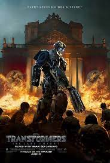

Sobre
Transformers 7: O Despertar das Feras
Gênero: Ação/Ficção Cientifica
Direção: Steven Caple Jr
Escrito por: Jon Hoeber, Erich Hoeber
Duração: 2h 7min
Elenco: Anthony Ramos (Noah Diaz), Dominique Fishback (Elena Wallace), Peter Cullen (Optimus Prime), Liza Koshy (Arcee), Pete Davidson (Mirage), Ron Perlman (Optimus Primal)


Sinopse
Noah um jovem do Brooklyn que encontra um artefato alienígena. O artefato desperta a atenção dos Maximals, uma facção de Transformers que está em guerra com os Predacons. Enquanto isso, Optimus Prime e os Autobots estão lutando contra Scourge, um Decepticon corrupto que está reunindo um exército de Terrorcons. Noah se junta aos Maximals para ajudar a derrotar Scourge e salvar o mundo.